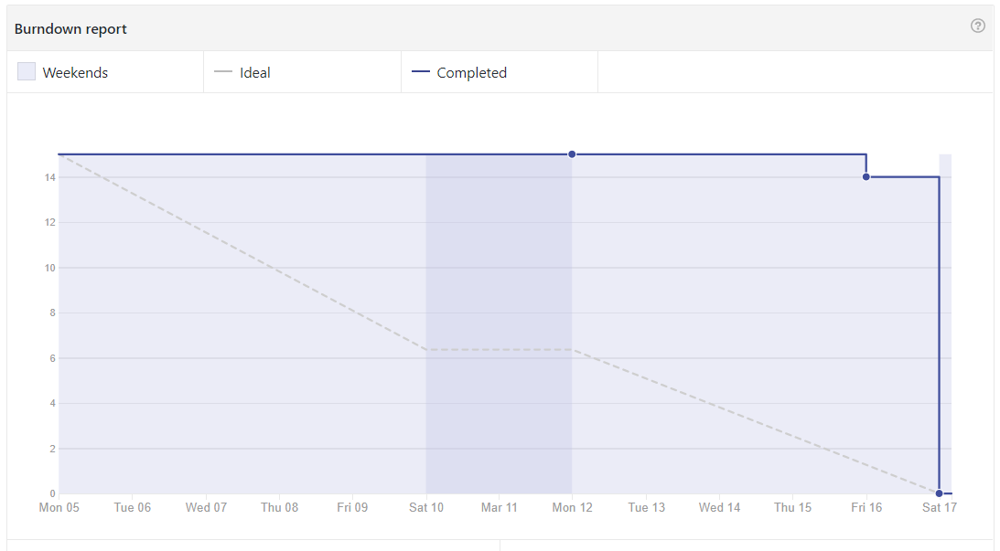

Sprint 0
Objetivo
- Integrar a equipe;- Definir papeis; e
- Prover viabilidade técnica com treinamentos e Dojos.
Sprint Backlog
#1 - Adicionar Licença do repositório#4 - Adicionar código de conduta
#5 - Adicionar guia de contribuição do projeto
#6 - Treinamento 1 - Scrum
#8 - Treinamento 2 - Git, Kanban
#11 - Adicionar documentação de sprints
#14 - Estudar as tecnologias do projeto
#24 - Documentar Sprint 0
Papéis
- Product Owner: João Egewarth- Scrum Master: Isaque Alves
- DevOps: Eliseu Egewarth
- Arquitetura: Gabriela Alves
- Desenvolvedores: Beatriz Hanae, Ezequiel De Oliveira, Felipe Campos, Gabriela Guedes, Guilherme Deusdará e Vitor Leal.
Pareamento
Não houve pareamento definidos para essa sprint.Duração
Data início: 05/03/2018Data término: 17/03/2018
Duração: 13 dias
Pontos
Planejados:- 15 Pontos
Executados:
- 15 pontos
Burndown
Revisão
- A sprint foi concluída sem riscos pontuais.- As práticas ágeis e as tecnologias adotadas para o projeto foram aplicadas por todos os membros do time.
Dívidas Técnicas
- Não se aplica.Retrospectiva
Pontos positivos
- Houve uma excelente aaceitação do time de desenvolvimento com a tecnologia escolhida.- As práticas ágeis e as tecnologias adotadas para a Release 1 foram utilizadas por todos os membros do time.
Pontos Negativos
- Houve dificuldade com o download, bem como a instalação do ambiente do react para que fosse possível estudar a linguagem na prática.- Ocorreu falhas na comunicação interna.
Desempenho
Riscos
Risco |
Ação Preventiva |
Ação Reativa |
Adaptação da equipe com as tecnologias |
Procurar alunos com experiência para ministrar treinamentos. |
Realização de treinamentos sobre tecnologias necessárias. |
Problemas de equipamentos. |
Manutenção. |
Pareamento presencial e utilização de equipamentos disponibilizados pela universidade. |
Divergência de horários entre os membros do time |
Quadro de horários vagos. |
Planejamento do pareamento semanal a partir do quadro de horários vagos. |
Dificuldade em configurar o ambiente |
Auxiliar a equipe de desenvolvimento na configuração de suas máquinas. |
Automatizar o ambiente com a ferramenta Docker. |
Dificuldades na interação do time |
Realizar feedbacks constantes para facilitar a comunicação e o acompanhamento constante dos membros. |
Uso do GeekBot para realizar daily meetings pelo Slack e reuniões presenciais três vezes por semana. |
Baixa adesão dos usuários a aplicação |
Implantar o Fabric.io ou outra ferramenta. |
Melhorar o design. |
Produto não atende às necessidades do cliente |
Reuniões semanais com o cliente. |
Identificar os motivos, replanejar e refazer o produto. |
Baixa produtividade dos integrantes do grupo |
Dar suporte e motivação aos integrantes. |
O Scrum Master deve identificar as razões e tentar solucioná-las individualmente. Se necessário, apresentar o problema ao grupo e relatar o ocorrido à professora. |
Desistência da disciplina |
Integrar e estimular a participação dos integrantes. |
Redistribuição de tarefas e melhora do planejamento. |
Indefinição do escopo |
Reuniões semanais com o cliente. |
Buscar alternativas para elicitação de requisitos. |
Alteração do escopo |
Documentar e refinar os requisitos. |
Planejar corretamente a sprint e manter contato frequente com o cliente para ajustar o escopo. |
Falta de membros durante as reuniões semanais |
Definir datas que a maioria dos membros possam estar presentes. |
Alinhamento com o integrante sobre as decisões tomadas. |
Os calculos e os gráficos de burndown dos riscos podem ser encontrados aqui.